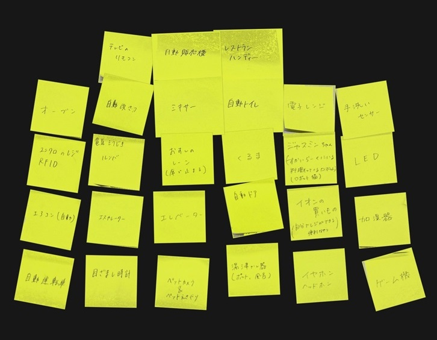
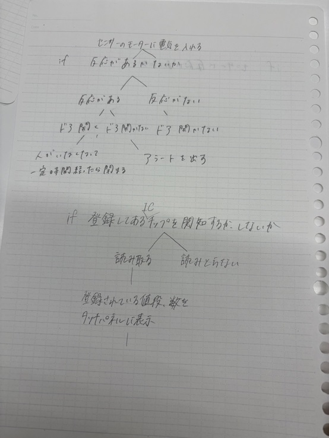
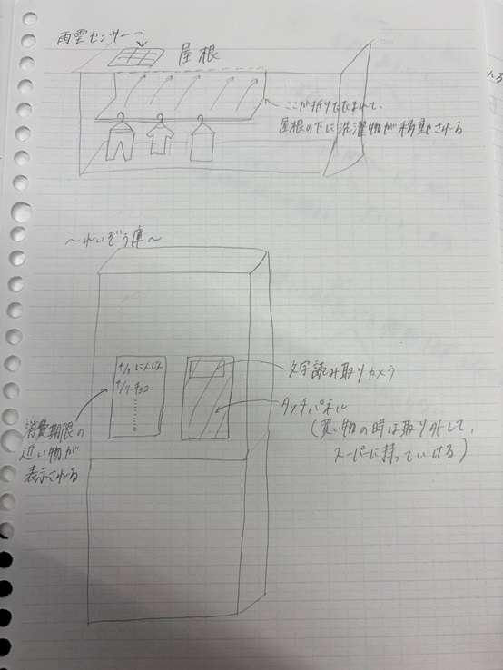

プログラムでモノを動かしているものはなにか

私たちのグループでは、自動ドア・ペットカメラに付いている餌やり機能・目覚まし時計などが出た。
プログラミング的思考

一つ目に考えたのが、自動ドアについてだ。考えたｉｆの手順は画像の通り。
二つ目に考えたのが、ユニクロなどで導入されているレジについてだ。グループで考えた時は分からない部分が多かった為、後でChatGPTに聞いた結果がこちら！！
[カゴが置かれた？]
├─ はい → [商品あり？]
│ ├─ はい → [全商品読み取れた？]
│ │ ├─ はい → [支払い方法選択]
│ │ │ ├─ 現金
│ │ │ ├─ クレジット
│ │ │ └─ アプリ
│ │ └─ いいえ → エラー表示
│ └─ いいえ → 「商品がありません」
└─ いいえ → 待機中
[支払い方法は？]
├─ 現金
│ ├─ お札挿入完了？
│ │ ├─ はい → [おつりの計算・返却]
│ │ └─ いいえ → 待機またはエラー
│ └─ 硬貨処理
├─ クレジットカード
│ ├─ カード読み込み成功？
│ │ ├─ はい → 決済通信 → 承認された？
│ │ │ ├─ はい → 支払い成功
│ │ │ └─ いいえ → エラー表示・やり直し
│ │ └─ いいえ → 再スキャン要求
└─ アプリ決済（QRコードなど）
├─ コード読み取り成功？
│ ├─ はい → アプリ側の操作を待つ
│ │ ├─ 決済成功 → OK
│ │ └─ 決済失敗 → エラー
│ └─ いいえ → 読み取りやり直し
グループで考えた時よりも遥かにそれぞれの工程が細かく書かれていて、プログラムの大変さに気づきました…。
プログラミングでどんな事ができそうか

一つ目に考えたのが、雨が降りそうだと感知したら屋根の下に洗濯物が移動してくれるというもの。
二つ目に考えたのが、冷蔵庫に食べ物の賞味期限・消費期限を読み取ることが出来るパネルがついていて、期限の近いものが冷蔵庫に表示されるというもの。